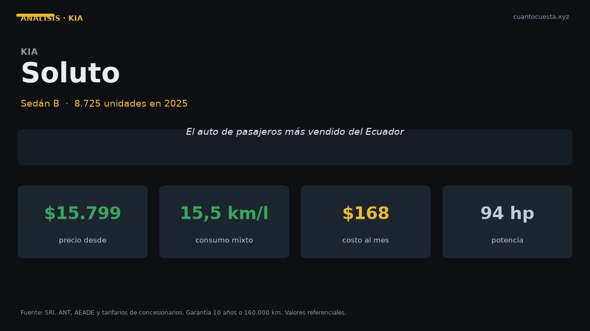

Kia Soluto en Ecuador: análisis completo, costos y veredicto
El Kia Soluto es el auto de pasajeros más vendido de Ecuador: 8.725 unidades en 2025. Precio, consumo, mantenimiento anual y veredicto sin adornos.

El Kia Soluto es la compra más racional del mercado ecuatoriano si tu recorrido es asfalto. En 2025 vendió 8.725 unidades: fue el auto de pasajeros más vendido de Ecuador. Cuesta entre $15.799 y $18.790, consume poco y trae la garantía más larga del segmento: 10 años o 160.000 km.
El contexto explica por qué conviene mirarlo primero. 2025 cerró con 124.505 vehículos nuevos, 15% más que 2024. El primer semestre de 2026 llegó a 78.185 unidades (+41,4%), récord histórico, y junio de 2026 fue el mejor mes registrado con 14.412 unidades. Kia destronó a Chevrolet tras 29 años de liderazgo. En un mercado de 130 marcas y más de 600 modelos, el Soluto sigue primero en su categoría.
La ventaja del Soluto no está en la ficha técnica: está en el volumen. Un auto que se vende 8.725 veces al año tiene repuestos en todos los talleres, mecánica conocida y reventa rápida. Eso ahorra dinero durante toda la vida del carro.
Ficha técnica
| Dato | Kia Soluto |
|---|---|
| Motor | 1.4 L MPI, 4 cilindros, 16 válvulas |
| Potencia | 94 hp a 6.000 rpm |
| Torque | 132 Nm a 4.000 rpm |
| Transmisión | Manual 5 velocidades o automática 4 velocidades |
| Tracción | Delantera |
| Consumo urbano | 13,8 km/l (MT) / 12,5 km/l (AT) |
| Consumo carretera | 18,2 km/l (MT) / 16,8 km/l (AT) |
| Consumo mixto | 15,5 km/l (MT) / 14,2 km/l (AT) |
| Tanque | 43 litros |
| Maletero | 475 litros |
| Peso | 1.095 kg |
| Largo | 4.405 mm |
| Distancia entre ejes | 2.600 mm |
| Origen | Corea del Sur |
| Garantía | 10 años o 160.000 km |
Los 475 litros de maletero son el dato que más sorprende: superan a buena parte de los SUV compactos que se venden en el país. Y con 1.095 kg de peso, el Soluto es liviano para su tamaño, algo que se siente en ciudad y en el consumo.
Precio y versiones en Ecuador
| Versión | Precio de referencia |
|---|---|
| LX (entrada) | desde $16.990 |
| Base (listado en Patiotuerca) | $15.799 |
| EX (tope) | $18.790 |
Los precios varían por agencia, ciudad y promoción del mes, así que el rango útil es $15.799 a $18.790. La diferencia entre entrada y tope ronda los $1.800 a $3.000, y se paga sobre todo en equipamiento de comodidad y en seguridad pasiva.
Cuánto cuesta mantenerlo
Escenario: 12.000 km al año, versión EX de $18.790, combustible Extra o Ecopaís a $3,21 el galón.
| Rubro anual | Rango |
|---|---|
| Combustible (15,5 km/l mixto, MT) | $667 |
| Mantenimiento (2 a 3 cambios de aceite, alineación, filtros) | $180 – $320 |
| Matrícula y revisión técnica | ~$180 |
| Seguro (≈4% del valor el primer año) | $752 |
| Llantas (amortizadas a 40.000 km) | ~$150 |
| Lavado, imprevistos, multas | $100 – $200 |
| Total anual | $2.030 – $2.270 |
| Equivalente mensual | $169 – $189 |
Ese total está por encima del rango general de referencia para un auto a gasolina de 12.000 km al año ($1.480–$1.900) por el seguro de la versión EX. Con la automática el gasto en combustible sube a unos $728 al año.
Los precios unitarios de los servicios, para que compares con tu taller: cambio de aceite y filtro $50–$90 cada 5.000 km, alineación y balanceo $30–$50, filtro de aire $20–$40, filtro de combustible $30–$60, líquido de frenos $40–$70, bujías $50–$100, pastillas delanteras $80–$150, batería $100–$200.
En Quito y Guayaquil, con tránsito pesado, conviene adelantar los cambios de aceite respecto al intervalo teórico. Con sintético el rango es 10.000–15.000 km o 6 meses; en tráfico de hora pico, acórtalo.
Equipamiento y seguridad
La versión EX suma rines de aleación, sensores de reversa, cámara trasera, pantalla táctil de 8", volante multifuncional y compatibilidad con Android Auto y Apple CarPlay.
| Elemento | Soluto EX |
|---|---|
| Airbags | 6 |
| ABS + EBD | Sí |
| Control de estabilidad (ESC) | Sí |
| Asistente de arranque en pendiente | Sí |
Dato honesto: las fuentes consultadas confirman 6 airbags en la versión EX, pero no detallan el número de airbags de las versiones de entrada. Pregunta ese punto por escrito en la agencia antes de firmar.
Para quién es y para quién no
Es para ti si:
- Manejas casi siempre asfalto, en ciudad o carretera
- Quieres el costo total más bajo posible a cinco años
- Necesitas maletero grande (475 L) para trabajo o familia
- Valoras una garantía que cubra todo el plazo del crédito
No es para ti si:
- Entras con frecuencia a lastre, fincas o caminos rotos: aquí el despeje del suelo manda y necesitas un SUV
- Necesitas más de 94 hp para carretera de montaña cargada
- Quieres caja automática moderna: la del Soluto es de 4 velocidades
Comparación con su rival directo
| Modelo | Precio desde | Motor | Nota |
|---|---|---|---|
| Kia Soluto | $15.799 | 1.4 L, 94 hp | El más vendido del país |
| Chevrolet Sail | $16.500 | No especificado | Más barato de lista, menos red de posventa |
| Hyundai Accent | $17.890 | No especificado | Rival natural |
| Nissan Versa | $18.500 | 1.6 L, 106 hp | 12 hp más, $2.700 más caro |
El Versa ofrece más potencia por más dinero. El Sail cuesta un poco más que el Soluto base pero queda por debajo en garantía. Ninguno de los tres se acerca a las 8.725 unidades del Soluto, lo que en un país donde la reventa pesa significa menos compradores esperando un Accent o un Sail usado.
Veredicto
El Kia Soluto es el mejor punto de entrada al auto nuevo en Ecuador. Cuesta $667 al año moverlo, tiene el maletero más grande de su categoría y una garantía de 10 años que elimina el riesgo de fallas de fábrica durante todo el crédito.
Es un auto de asfalto. Si vives en el campo o entras a lastre cada semana, no es tu carro. Si tu recorrido es Quito–valle, Guayaquil–salinas o similar, el Soluto es la decisión con menos sorpresas del mercado.
Precios referenciales de lista a septiembre de 2026. Varían por agencia, versión y promoción. Los consumos son datos de ficha técnica; el consumo real depende de tráfico, carga y altitud. No constituye asesoría financiera.
Sigue leyendo
Chery Arrizo en Ecuador: análisis completo, costos y veredicto
Vendió 1.534 unidades en 2025 y Chery creció 50,1% en el primer semestre de 2026. Precio, repue
Chevrolet D-Max en Ecuador: análisis completo, costos y veredicto
Es la camioneta más vendida de Ecuador con 5.515 unidades en 2025. Precio, costo real de operac
Chevrolet Groove en Ecuador: análisis completo, costos y veredicto
El SUV más vendido de Ecuador: 4.063 unidades en 2025. Precio desde $19.999, cuota de $309 al m
GWM Poer en Ecuador: análisis completo, costos y veredicto
La camioneta ensamblada en Ambato que rompió el precio del 4x4: 4.092 unidades en 2025. Precio,
Hyundai Grand i10 en Ecuador: análisis completo, costos y veredicto
Segundo auto de pasajeros más vendido de Ecuador con 1.690 unidades en 2025. Precio desde $13.9
Cómo usamos estos datos
Las cifras de esta guía provienen de fuentes públicas oficiales y tarifarios de concesionarios publicados. Los valores son referenciales: tasas municipales, promociones y precios de repuestos varían. Verifica siempre en la entidad o concesionario antes de decidir.